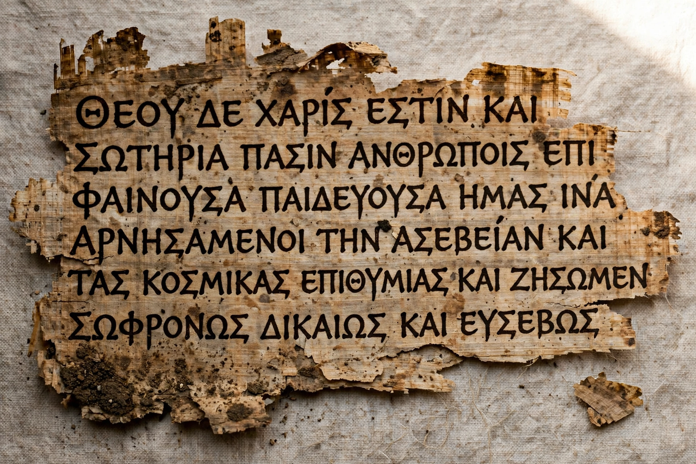

Ancient Greek

Region: eastern Mediterranean, Greece, Anatolia, southern Italy
Era: c. 1500 BCE – c. 300 CE (developed into Koine, then Medieval Greek)
Language family: Indo-European → Hellenic → Greek
Writing system: Greek alphabet (earlier Linear B)
Dialects: Mycenaean, Homeric, Ionic, Attic, Doric, Aeolic
Ancient Greek (Ἑλληνική) is the stage of the Greek language attested from about 1500 BCE to roughly 300 CE, a branch of the Indo-European family. Its literature — the epics of Homer, the tragedies of Aeschylus, Sophocles and Euripides, the histories of Herodotus and Thucydides, the philosophy of Plato and Aristotle, and the New Testament — forms a foundation of Western culture. Greek vocabulary also underlies much scientific and technical terminology in modern languages.
Periods and dialects
The earliest Greek, Mycenaean, was written in the Linear B syllabary (deciphered by Michael Ventris in 1952). After a gap in written records, the Greeks adopted and adapted the Phoenician alphabet — adding vowel letters, a decisive innovation. Classical Greek (c. 500–300 BCE) was divided into dialects: Attic of Athens, Ionic of the Aegean, Doric of Sparta and Aeolic of Lesbos. Alexander the Great's conquests spread the Attic-based common dialect, Koine, which became the lingua franca of the eastern Mediterranean and the language of the Septuagint and the New Testament.
Grammar
Ancient Greek is a highly inflected language: nouns decline in five cases and three genders, and verbs conjugate for person, number, tense, voice (active, middle, passive) and mood (indicative, subjunctive, optative, imperative), with a distinctive dual number and a system of pitch accent. See Grammar and Writing system.